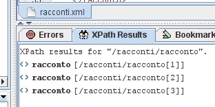
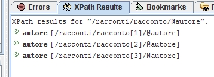
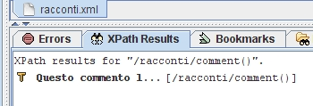
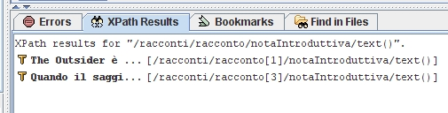
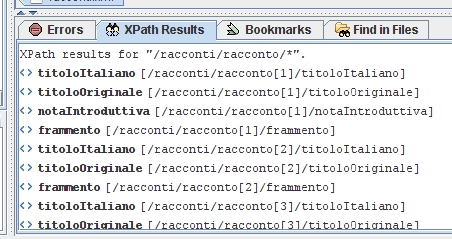
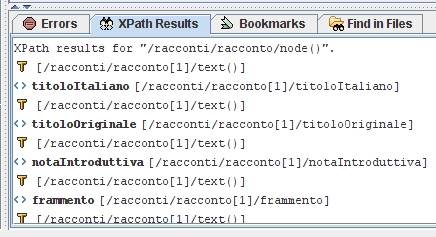
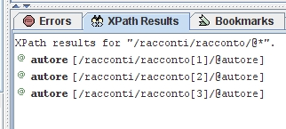

Torna alla pagina di Tecnologie Web
:: Tecnologie Web ::
XPath
Introduzione
XPath è una sintassi che consente di riferirsi a parti di documenti XML associati ad un DTD o ad un XML Schema. Un descrittore XPath è pensato per essere inserito in un documento XML, in particolare come valore di un attributo.
XPath è in grado di indicare i nodi in base alla loro posizione assoluta o relativa, al loro tipo, al loro contenuto ed in base ad altri criteri. Le espressioni XPath sono anche in grado di rappresentare numeri, stringhe o valori booleani, in modo da permettere ai fogli di stile XSLT di svolgere operazioni aritmetiche per numerare elementi o gestire riferimenti incrociati.
XPath vede un documento XML come un albero di nodi e il suo scopo è proprio quello di individuare nodi e insiemi di nodi all'interno di questo albero:
- nodo radice
Il nodo radice dell'albero non è lo stesso elemento radice del documento infatti il nodo radice dell'albero contiene l'intero documento(compreso l'elemento radice; i commenti; le istruzioni di elaborazione presenti prima del tag iniziale o dopo il tag finale), quindi ha come figlio l'intero documento e non ha padre.
- nodi elemento
ha come padre il nodo radice o un altro nodo elemento. Come figli ha eventuali sottonodi, testo e istruzioni contenute al suo interno. Gli attributi non sono figli di un nodo elemento.
- nodi attributo
ha come padre un altro elemento, ma non si considera figlio di quell'elemento. Per accedervi ci vuole una richiesta di attributo.
- nodi testo
- nodi di commento
- nodi per le istruzioni di elaborazione
- nodi namespace
Notiamo che nell'elenco mancano alcune componenti tipiche dei documenti XML, cioè le sezioni CDATA, le referenze a entità e le dichiarazioni del tipo di documento. Però XPath è in grado di identificare qualsiasi valore al loro interno.
NOTA:
Gli esempi sottostanti si rifanno a questo documento XML:
<?xml version="1.0" encoding="UTF-8"?>
<!DOCTYPE racconti SYSTEM "racconti.dtd">
<racconti>
<!-- Questo commento lo inserisco
perché mi serve provare il rilevamento dei commenti di XPath :P -->
<racconto autore="Howard Phillips Lovecraft">
<titoloItaliano>L'estraneo</titoloItaliano>
<titoloOriginale>The Outsider</titoloOriginale>
<notaIntroduttiva>
The Outsider è considerato uno degli esempi più palesi
dell'influsso che lo stile e le tematiche di Edgar Allan
Poe hanno esercitato su Lovecraft.
La storia ha una sottintesa nota autobiografica. Nel
protagonista, che cresce solo in una grande casa,
nutrendo la sua cultura di vecchi libri, è facile
riconoscere l'infanzia solitaria dello stesso Lovecraft.
L'invocazione finale all'oblio di fronte agli orrori
dell'esistenza da "estraneo" proiettato nel mondo comune
si ripeterà continuamente nella sua opera, soprattutto
quella poetica, nella quale si riflettono più chiaramente
le angosce dell'anima.
</notaIntroduttiva>
<frammento>
Infelice chi dell'infanzia ha soltanto memorie di paura
e tristezza. Sventurato chi, volgendosi indietro, non vede
che ore solitarie trascorse in sale vaste e malinconiche
tappezzate di lugubri tendaggi e file esasperanti di libri
antichi, o in desolate veglie in boschi crepuscolari fitti
di immensi alberi grotteschi coperti da erbe, che agitano
silenziosi in alto i rami contorti...
</frammento>
</racconto>
<racconto autore="Edgar Allan Poe">
<titoloItaliano>La mascherata della Morte Rossa</titoloItaliano>
<titoloOriginale>The Mask of the Red Death</titoloOriginale>
<frammento>
La settima stanza era pesantemente avvolta in panneggi
di velluto nero che pendevano ovunque dal soffitto e
dalle pareti, ricadendo in pesanti pieghe su un tappeto
della stessa stoffa e colore. In quest'unica stanza pero'
la tinta delle finestre non corrispondeva alle decorazioni.
Le vetrate erano di colore scarlatto, di un cupo color
sangue. Ora in nessuna di quele sette stanze vi era una
sola lampada o candelabro, pur tra la profusione di ornamenti
dorati sparsi qua e la' o pendenti dai soffitti.
</frammento>
</racconto>
<racconto autore="Howard Phillips Lovecraft">
<titoloItaliano>La musica di Erich Zann</titoloItaliano>
<titoloOriginale>The Music of Erich Zann</titoloOriginale>
<notaIntroduttiva>
Quando il saggista francese Jacques Bergier chiese a Lovecraft
se avesse mai visitato Parigi, per averne descritto così bene
l'atmosfera di certi quartieri, Lovecraft gli rispose:"certo
che l'ho visitata. Con Poe, in sogno".
Malgrado l'apparenza onirica non è tratta da un unico sogno;
tuttavia ho sognato spesso di strade tortuose come la
Rue d'Auseil.
</notaIntroduttiva>
<frammento>
Riuscii invece a sentire la musica del vecchio muto: prima
salendo in punta di piedi fino al quinto piano, poi trovando
il coraggio necessario per inerpicarmi su per l'ultima rampa
scricchiolante che conduceva alla mansarda di Zann. E lì,
nell'angusto pianerottolo davanti alla porta sprangata e col
buco della serratura tappato, più volte udii suoni che mi
colmarono di un terrore indefinibile, un terrore di occulti
prodigi e celati misteri.
</frammento>
</racconto>
</racconti>
Location Path
Location Path letteralmente significa percorso di locazione e identifica un insieme di nodi di un documento tramite un location step(passo di locazione). L'insieme di nodi può essere vuoto, contenere un singolo nodo o numerosi nodi; ogni nodo può rappresentare uno degli elementi presenti nell'albero dei nodi, quindi: un elemento, un attributo, un namespace, un testo, un commento, un'istruzione di elaborazione, il nodo radice o una combinazione di questi.
Root Location Path
Il Root Location Path corrisponde al carattere: / e ha lo scopo di selezionare il nodo radice del documento.
/ rappresenta un location path assoluto, perché la posizione identificata è indipendente dal contesto del nodo ed è sempre il nodo radice del documento.
Location Step degli elementi figli
Questo location path coincide con il nome di un singolo elemento e il suo scopo è quello di selezionare tutti gli elementi figli il cui nome coincida con quello specificato.
Questo location path è un XPath relativo, in quanto gli elementi individuati dipendono da quale sia il nodo corrente(il contesto).
Esempio:
Inserendo in XPath il comando:
otteniamo:

Location Step degli Attributi
Gli attributi degli elementi possono essere selezionati tramite XPath utilizzando il carattere @ seguito dal nome dell'attributo.
Esempio:
Inserendo in XPath il comando:
/racconti/racconto/@autore
otteniamo:

Nodi di: namespace, testo, istruzioni di elaborazione, commenti
Per poter individuare i nodi di commento, di testo e istruzioni di elaborazione dobbiamo utilizzare rispettivamente:
- comment()
trova una corrispondenza in qualsiasi nodo di commento che è figlio diretto del nodo di contesto.
Esempio:
Inserendo in XPath il comando:
otteniamo:

- text()
trova una corrispondenza in qualsiasi nodo di testo che è figlio diretto del nodo di contesto.
Esempio:
Inserendo in XPath il comando:
/racconti/racconto/notaIntroduttiva/text()
otteniamo:

- processing-instruction()
- senza argomenti: seleziona tutte le istruzioni di elaborazione che sono figlie dirette del nodo di contesto.
- con argomenti: seleziona le istruzioni di elaborazione il cui target corrisponde a quello indicato come argomento.
Caratteri Jolly
Esistono tre tipi di caratteri Jolly che permettono di trovare una corrispondenza con differenti tipi di elementi e nodi.
- asterisco *
corrisponde a qualsiasi nodo di elemento, indipendentemente dal tipo. E' però anche possibile anteporre all'asterisco un prefisso di namespace con lo scopo di selezionare solo gli elementi che appartengono a quel namespace.
L'asterisco non può essere utilizzato per cercare corrispondenze con attributi, nodi di testo, nodi di commento o istruzioni di elaborazione.
Esempio:
Inserendo in XPath il comando:
otteniamo:

- node()
corrisponde a qualsiasi tipo di nodo: nodi di elemento, nodi di testo, nodi di attributo, nodi di istruzioni di elaborazioni, nodi di namespace, nodi di commento.
Esempio:
Inserendo in XPath il comando:
/racconti/racconto/node()
otteniamo:

- @*
corrisponde a tutti i nodi degli attributi. Anche in questo caso è possibile anteporre un prefisso di namespace per poter selezionare solo gli attributi che appartengono al namespace indicato.
Esempio:
Inserendo in XPath il comando:
otteniamo:

In questo caso abbiamo ottenuto lo stesso risultato di /racconti/racconto/@autore perché nel documento XML ho inserito un unico tipo di attributo, se ce ne fossero stati degli altri il comando li avrebbe visualizzati.
Corrispondenze Multiple
Una corrispondenza multipla consiste nella corrispondenza tra più tipi di elementi o attributi e si ottiene utilizzando il carattere |, che permette appunto di combinare location step individuali.
Location Path Compositi
I location path compositi consistono nella combinazione dei singoli location step visti fino ad ora.
Ci sono quattro tipi di location path compositi:
- /
ogni step del path è relativo rispetto a quello precedente.
- //
seleziona tutti i discendenti del nodo di contesto, oltre al nodo di contesto stesso. Quindi se inserita all'inizio di un'espressione XPath seleziona tutti i discendenti del nodo root.
- ..
indica il padre del nodo corrente.
- .
indica il nodo corrente. Serve per recuperare il valore dell'elemento corrente.
Predicati
I predicati entrano in gioco quando ci interessa selezionare solo alcuni nodi all'interno dell'insieme dei nodi rintracciati.
Ogni step di un location path può contenere un predicato che effettui una selezione dalla lista di nodi che risultino essere correnti in quel determinato step dell'espressione. I predicati possono essere utilizzati in una combinazione qualsiasi dei location step che compongono un location path.
I predicati contengono un'espressione booleana che viene verificata per ognuno dei nodi contenuti nella lista dei nodi di contesto correnti; se l'espressione ha valore falso il nodo corrispondente viene cancellato dalla lista, altrimenti rimane nella lista.
I predicati possono anche non avere valore booleano, in questo caso si converte il tipo differente in un valore booleano in questo modo:
- i predicati che hanno valore numerico sono considerati veri se corrispondono alla posizione del nodo corrente, falsi altrimenti.
- i predicati che indicano un insieme di nodi sono considerati veri se l'insieme di nodi non è vuoto, falsi in caso contrario.
- i valori di tipo stringa sono anch'essi considerati veri se la stringa non è vuota, falsi altrimenti.
XPath supporta gli operatori relazionali classici: =, <, >, <=, >=, !=. Gli operatori < e <= se si trovano in un documento XML è necessario utilizzare le referenze a entità <, infatti anche le espressioni XPath devono rispettare le regole di ben formazione tipiche dei documento XML.
XPath supporta anche gli operatori booleani: or e and per poter combinare logicamente più espressioni.
Location Path non abbreviati
Tutti i location path visti fino ad ora erano location path abbreviati, ma esistono anche i location path non abbreviati più complessi da scrivere ma più flessibili.
Ogni location step di un location path è composto da tre porzioni:
- axis(asse): indica in quale direzione spostarsi a partire dal nodo di contesto per cercare i nodi dello step successivo.
- node test(test di nodo): indica quali nodi includere lungo l'asse specificato e i predicati effettuano una scelta tra i nodi rintracciati sulla base di un'espressione.
- predicati: porzione opzionale.
Nella forma abbreviata l'asse e il test di nodo sono combinati, mentre nella forma non abbreviata sono separati da due caratteri due punti ::
La sintassi abbreviata permette di muoversi solo lungo gli assi child(figli), parent(padre), self(se stesso), attribute(attributo), descendant-of-self(discendenti o se stesso), mentre la sintassi non abbreviata aggiunge altri otto assi lungo i quali è possibile muoversi:
- antenati(ancestor axis): tutti i nodi di elemento che contengono, direttamente o indirettamente, il nodo di contesto: cioè il nodo padre, il padre del padre, il padre del padre del padre e così fino al nodo radice, seguendo questo ordine.
- fratelli successivi(following-sibling axis): tutti i nodi che seguono il nodo di contesto e sono contenuti nello stesso nodo elemento padre, nell'ordine in cui appaiono nel documento.
- fratelli precedenti(preceding-sibling axis): tutti i nodi che precedono il nodo di contesto e sono contenuti nello stesso nodo elemento padre, nell'ordine inverso rispetto a quello in cui appaiono nel documento.
- successivi(following axis): tutti i nodi che seguono il nodo di contesto, nell'ordine in cui appaiono nel documento.
- precedenti(preceding axis): tutti i nodi che precedono il nodo di contesto, nell'ordine inverso rispetto a quello in cui appaiono nel documento.
- namespace(namespace axis): tutti i namespace che abbiano influenza sul nodo di contesto, indipendentemente dal fatto che siano stati dichiarati in tale nodo o in uno dei suoi antenati.
- discendenti(descendant axis): tutti i discendenti del nodo di contesto, escluso il nodo di contesto stesso.
- antenati o se stessi(ancestor-or-self axis): tutti gli antenati del nodo di contesto più il nodo di contesto stesso.
Espressioni XPath generali
Le espressioni XPath, oltre ai location path, possono anche restituire numeri, valori booleani e stringhe che sono ammissibili per fornire valori dell'attributo select degli elementi xsl:value-of e all'interno dii predicati di location path.
- numeri: tutti i numeri in XPath sono floating point doubles a otto byte, quindi non esistono numeri interi puri.
I cinque operatori aritmetici di base sono: +; -; *; div; mod.
- stringhe: le stringhe in XPath sono sequenze ordinate di caratteri Unicode che possono essere racchiuse tra apici singoli e doppi indifferentemente. L'unica restrizione consiste nell'impossibilità di utilizzare all'interno della stringa il delimitatore(" ') utilizzato.
Per verificare l'uguaglianza tra due stringhe si possono utilizzare gli operatori: =; !=
- booleani: un valore booleano può assumere solo due valori, true e false.
Funzioni XPath
Le funzioni XPath sono chiamate che manipolano gli oggetti selezionati, ritornando un valore. Tutte le funzioni restituiscono uno dei quattro tipi di dato seguenti:
- booleano
- stringa
- insieme di nodi
- numero
Notiamo quindi che le funzioni XPath non possono restituire void.
XPath non è un linguaggio fortemente tipizzato come Java quindi è possibile utilizzare qualsiasi tipo(dei quattro previsti) come argomento della funzione, indipendentemente dal tipo di dato che ci si aspetta di ricevere; l'elaboratore infatti cercherà di convertirlo nel tipo desiderato.
Le funzioni sono riconoscibili dalla presenza di due parentesi tonde alla fine, all'interno delle quali è possibile inserire eventuali argomenti.
XPath mette a disposizione molte funzioni utili, che ovviamente non possiamo analizzare tutte in dettaglio, però ne vediamo qualcuna:
- number last():
- number position():
- number count(node-set): ritorna il numero di nodi dell'argomenti node-set.
- node-set id(object): seleziona gli elementi in base al loro ID univoco, come dichiarato nel DTD.
Torna alla pagina di Tecnologie Web